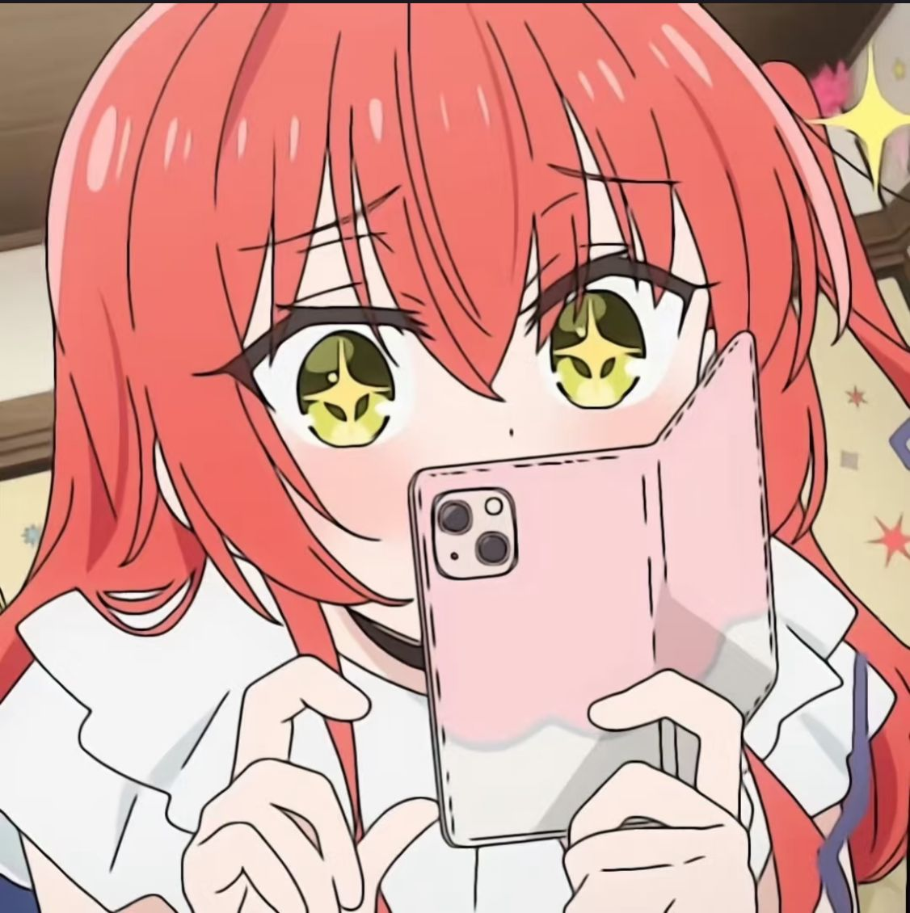

I'm a researcher interested in advancing natural language processing (NLP) through knowledge-enhanced text generation for avatars. I have already done some applicaiton demos and you can play it on steam.The below is my profile, if you have any questions, feel free to mail me.